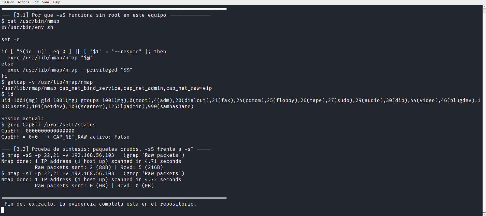
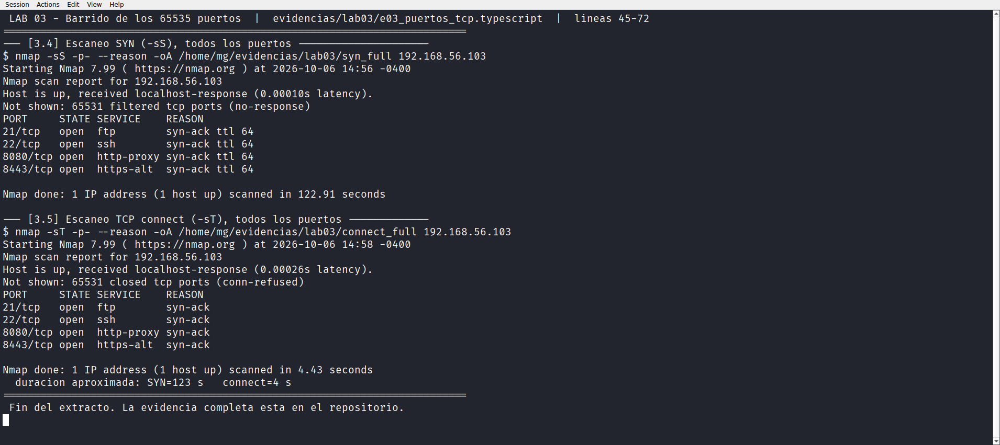
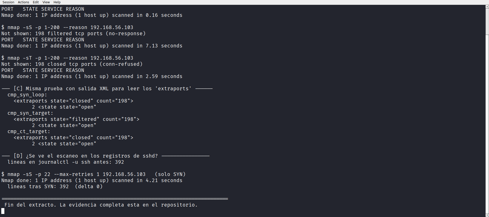
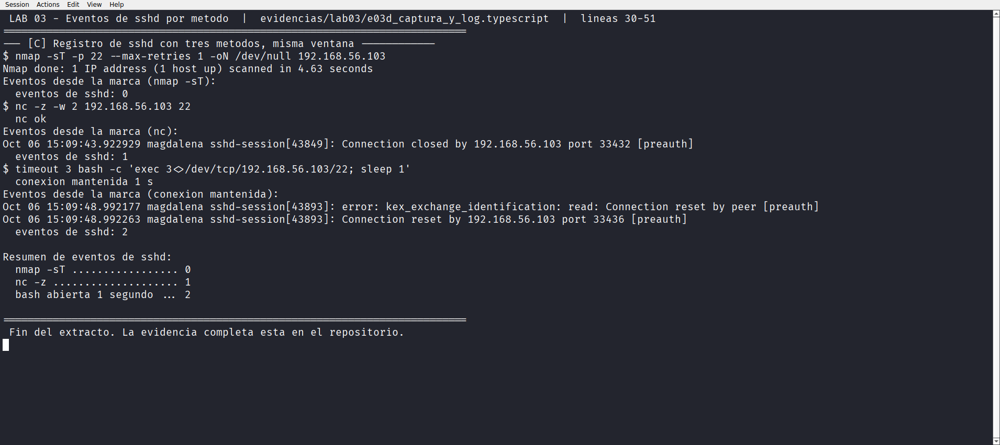

Laboratorio 03 de 06 · Estado completado
Puertos TCP y estados
Los 65 535 puertos TCP escaneados dos veces, con -sS y con -sT, obteniendo el mismo inventario de cuatro puertos abiertos pero estados opuestos en el resto. El laboratorio explica por qué, y documenta también lo que no se pudo comprobar.
1. Resumen para una persona de selección
Dos escaneos de todos los puertos sobre 192.168.56.103 devuelven los mismos cuatro puertos abiertos, 21, 22, 8080 y 8443. La diferencia está en los otros 65 531 puertos. Con -sS aparecen como filtrados y el escaneo tarda 122,91 segundos. Con -sT aparecen como cerrados y tarda 4,43 segundos.
El laboratorio desmonta la lectura obvia. No hay un firewall que aparezca y desaparece según la herramienta. La diferencia se aísla con una prueba controlada donde solo cambia el destino, se explica con la capacidad cap_net_raw que hace que -sS funcione sin root en este equipo, y se contrasta con la interfaz de captura que Nmap declara con -d.
Dos intentos de evidencia fallaron y quedan documentados como tales. tcpdump no tenía permiso para capturar, y los intentos de ver el escaneo en el registro de sshd dieron cero eventos incluso con -sT, lo cual no coincide con lo que produce una conexión hecha a mano. Ninguno de los dos resultados se presentó como si hubiera salido bien.
2. Objetivo técnico
- Ejecutar el barrido de los 65 535 puertos TCP con los dos modos principales y comparar inventario, estados y duración.
- Identificar la fuente de las capacidades que permiten el escaneo SYN sin privilegios de root.
- Aislar la causa de la discrepancia
filteredfrente aclosedcon una comparación controlada. - Determinar sobre qué interfaz captura Nmap cuando el destino es el propio equipo.
- Intentar verificar la traza en captura de paquetes y en el registro del servidor SSH, dejando constancia del resultado real.
- Cuantificar de nuevo el coste de la resolución de nombres dentro de un escaneo de puertos.
3. Entorno y alcance
Línea base heredada del Laboratorio 01 y no modificada. Objetivo autorizado 192.168.56.103 más el bucle 127.0.0.1 como referencia.
| Puerto | Servicio | Estado | Motivo | Origen del servicio |
|---|---|---|---|---|
21/tcp | ftp | open | syn-ack | Preexistente, vsftpd 3.0.5 |
22/tcp | ssh | open | syn-ack | Preexistente, canal de gestión |
8080/tcp | http-proxy | open | syn-ack | Añadido por este proyecto |
8443/tcp | https-alt | open | syn-ack | Añadido por este proyecto |
Sin cambios respecto al Laboratorio 01. No se escaneó ninguna otra dirección, no se realizó denegación de servicio, no se usó fuerza bruta y no se modificó firewall ni configuración de red.
4. Conocimientos previos
- El proceso de tres vías de TCP y los mensajes SYN, SYN-ACK, ACK y RST.
- La diferencia entre un puerto cerrado y uno filtrado, cerrado responde con RST y filtrado no responde.
- Las capacidades de Linux,
cap_net_raw,cap_net_adminycap_net_bind_service, introducidas en el Laboratorio 01. - Cómo funciona
connect()del sistema y por qué no necesita sockets crudos. - Journal de systemd con
journalctly su filtro por unidad y por marca de tiempo. - Identificadores de proceso (pid) para correlacionar eventos con una ejecución concreta.
5. Procedimiento reproducible
El laboratorio se dividió en cinco ejecuciones para poder aislar cada pregunta y conservar la evidencia por separado.
Paso 1 · Escaneos principales
scp scripts/lab03_puertos_tcp.sh mg@192.168.56.103:~/labenv/scripts/
ssh -i <clave> mg@192.168.56.103 "script -q -e -c 'bash ~/labenv/scripts/lab03_puertos_tcp.sh' ~/evidencias/lab03/e03_puertos_tcp.typescript"Paso 2 · Comparación aislada y revisión de registros
ssh -i <clave> mg@192.168.56.103 "script -q -e -c 'bash ~/labenv/scripts/lab03b_aislamiento.sh' ~/evidencias/lab03/e03b_aislamiento.typescript"Paso 3 · Interfaz de captura y método de lectura del journal
ssh -i <clave> mg@192.168.56.103 "script -q -e -c 'bash ~/labenv/scripts/lab03c_confirmacion.sh' ~/evidencias/lab03/e03c_confirmacion.typescript"Paso 4 · Captura real y contraste de registros con tres métodos
ssh -i <clave> mg@192.168.56.103 "script -q -e -c 'bash ~/labenv/scripts/lab03d_captura_y_log.sh' ~/evidencias/lab03/e03d_captura_y_log.typescript"Paso 5 · Diagnóstico del fallo de captura y del coste DNS
ssh -i <clave> mg@192.168.56.103 "script -q -e -c 'bash ~/labenv/scripts/lab03e_diagnostico.sh' ~/evidencias/lab03/e03e_diagnostico.typescript"Paso 6 · Recogida
scp -r mg@192.168.56.103:~/evidencias/lab03 evidencias/6. Comandos exactos y explicación de sus opciones
Barrido completo, dos modosnmap -sS -p- --reason -oA syn_full 192.168.56.103
nmap -sT -p- --reason -oA connect_full 192.168.56.103
-p-equivale a-p 1-65535, los 65 535 puertos TCP.--reasonañade la columna de motivo a cada fila, que es el dato central de este laboratorio.-sSenvía un SYN y analiza la respuesta sin completar la conexión.-sTdeja que el sistema haga la conexión completa.
Comparación controladanmap -sS -p 1-200 --reason 127.0.0.1
nmap -sS -p 1-200 --reason 192.168.56.103
nmap -sT -p 1-200 --reason 192.168.56.103
- Las tres comparten opciones y rango, cambia una sola variable por vez. Eso es lo que convierte una observación en una atribución.
- Se usó un rango corto, 1 a 200, para que las tres pruebas sean rápidas y comparables.
Origen de privilegioscat /usr/bin/nmap
getcap -v /usr/lib/nmap/nmap
grep CapEff /proc/self/status
/usr/bin/nmapes un envoltorio ensh, no el binario real.getcap -vmuestra las capacidades de archivo, que se heredan al ejecutar.CapEffde/proc/self/statusmuestra las capacidades efectivas de la sesión actual, aquí cero.
Interfaz de captura y verbosenmap -sS -p 22 -d 192.168.56.103 2>&1 | grep -i 'capture filter'
nmap -sS -p 22,21 -v 192.168.56.103
nmap -sT -p 22,21 -v 192.168.56.103
-daumenta el nivel de depuración e imprime, entre otras cosas, el filtro de captura y el dispositivo usado.-vmuestra el contadorRaw packets sent, que distingue un escaneo SYN real de una conexión por sistema.
Registro del servidor SSHjournalctl -u ssh --since "@$MARCA" --no-pager
nc -z -w 2 192.168.56.103 22
timeout 3 bash -c 'exec 3<>/dev/tcp/192.168.56.103/22; sleep 1'
--since "@$MARCA"recorta el journal en el instante previo a la prueba, evitando leer el histórico completo.nc -zabre y cierra una conexión TCP sin enviar datos.- El bloque con
/dev/tcpmantiene la conexión un segundo, que es lo que provoca los eventos distintos.
7. Resultados observados
7.1 Por qué -sS funciona sin root
$ cat /usr/bin/nmap
#!/usr/bin/env sh
set -e
if [ "$(id -u)" -eq 0 ] || [ "$1" = "--resume" ]; then
exec /usr/lib/nmap/nmap "$@"
else
exec /usr/lib/nmap/nmap --privileged "$@"
fi
$ getcap -v /usr/lib/nmap/nmap
/usr/lib/nmap/nmap cap_net_bind_service,cap_net_admin,cap_net_raw=eip
$ grep CapEff /proc/self/status
CapEff: 0000000000000000e03_puertos_tcp.typescript sección [3.1].Kali instala un envoltorio que añade --privileged cuando no se es root. Ese indicador le dice a Nmap que use los sockets crudos que el binario ya puede abrir gracias a cap_net_raw en el archivo. La sesión del usuario tiene CapEff 0x0, así que el privilegio viene del binario, no del usuario.
7.2 Prueba de síntesis, lo que cuentan los paquetes
$ nmap -sS -p 22,21 -v 192.168.56.103
Raw packets sent: 2 (88B) | Rcvd: 5 (216B)
$ nmap -sT -p 22,21 -v 192.168.56.103
Raw packets sent: 0 (0B) | Rcvd: 0 (0B)e03_puertos_tcp.typescript sección [3.2].Dos puertos, dos paquetes SYN enviados con -sS. Con -sT no se envía ninguno porque la conexión la realiza el sistema operativo con connect(), que Nmap no cuenta como paquete crudo.

-sS y -sT.7.3 Barrido de los 65 535 puertos
$ nmap -sS -p- --reason -oA syn_full 192.168.56.103
Host is up, received localhost-response (0.00010s latency).
Not shown: 65531 filtered tcp ports (no-response)
PORT STATE SERVICE REASON
21/tcp open ftp syn-ack ttl 64
22/tcp open ssh syn-ack ttl 64
8080/tcp open http-proxy syn-ack ttl 64
8443/tcp open https-alt syn-ack ttl 64
Nmap done: 1 IP address (1 host up) scanned in 122.91 seconds
$ nmap -sT -p- --reason -oA connect_full 192.168.56.103
Not shown: 65531 closed tcp ports (conn-refused)
PORT STATE SERVICE REASON
21/tcp open ftp syn-ack
22/tcp open ssh syn-ack
8080/tcp open http-proxy syn-ack
8443/tcp open https-alt syn-ack
Nmap done: 1 IP address (1 host up) scanned in 4.43 secondssyn_full.nmap y connect_full.nmap.| Métrica | -sS | -sT |
|---|---|---|
| Puertos abiertos | 4 | 4, los mismos |
| Estado del resto | filtered, motivo no-response | closed, motivo conn-refused |
| Duración, barrido completo | 122,91 s | 4,43 s |
| Duración, top 1000 | 9,97 s | 4,94 s |
| Paquetes crudos | sí | 0 |

7.4 Comparación aislada
$ nmap -sS -p 1-200 --reason 127.0.0.1
Not shown: 198 closed tcp ports (reset) 0.16 segundos
$ nmap -sS -p 1-200 --reason 192.168.56.103
Not shown: 198 filtered tcp ports (no-response) 7.13 segundos
$ nmap -sT -p 1-200 --reason 192.168.56.103
Not shown: 198 closed tcp ports (conn-refused) 2.59 segundos
XML correspondiente:
cmp_syn_loop -> <extraports state="closed" count="198">
cmp_syn_target -> <extraports state="filtered" count="198">
cmp_ct_target -> <extraports state="closed" count="198">e03b_aislamiento.typescript secciones [B] y [C].Con -sS hacia 127.0.0.1 los puertos cerrados responden con reset. Con -sS hacia 192.168.56.103 los mismos puertos no responden y quedan filtered. Con -sT hacia la misma dirección vuelven a estar closed, esta vez por conn-refused.

7.5 Interfaz que usa Nmap para capturar
$ nmap -sS -p 22 -d 192.168.56.103 2>&1 | grep -i 'capture filter'
Packet capture filter (device lo): dst host 192.168.56.103 and (icmp or
icmp6 or ((tcp or udp or sctp) and (src host 192.168.56.103)))
$ nmap -sS -p 22 -d 127.0.0.1 2>&1 | grep -i 'capture filter'
Packet capture filter (device lo): dst host 127.0.0.1 and (icmp or
icmp6 or ((tcp or udp or sctp) and (src host 127.0.0.1)))e03c_confirmacion.typescript sección [A].En los dos casos el dispositivo es lo, confirmando desde otra fuente lo que el Laboratorio 01 ya mostró con ip route get.
7.6 Intento de captura de paquetes, resultado fallido
$ getcap -v /usr/bin/tcpdump
/usr/bin/tcpdump
$ timeout 3 tcpdump -i lo -n -c 3
tcpdump: lo: You don't have permission to perform this capture on that device
(Attempt to create packet socket failed - CAP_NET_RAW may be required)
$ ls -l /tmp/lab03_cap.pcap
ls: cannot access '/tmp/lab03_cap.pcap': No such file or directorye03e_diagnostico.typescript sección [A].tcpdump no tiene capacidades en el archivo y la sesión tiene CapEff 0x0, así que nunca abrió el socket. El fichero .pcap no llegó a crearse. La salida previa que decía cero paquetes capturados significa que la captura falló, no que no hubiera tráfico.
7.7 Registro de sshd durante cada prueba
Resumen de eventos de sshd:
nmap -sT ................. 0
nc -z .................... 1
Oct 06 15:09:43 magdalena sshd-session[43849]: Connection closed by
192.168.56.103 port 33432 [preauth]
bash abierta 1 segundo ... 2
Oct 06 15:09:48 magdalena sshd-session[43893]: error:
kex_exchange_identification: read: Connection reset by peer [preauth]
Oct 06 15:09:48 magdalena sshd-session[43893]: Connection reset by
192.168.56.103 port 33436 [preauth]sshd por método, en la misma ventana de tiempo. Evidencia, e03d_captura_y_log.typescript sección [C].Los métodos manuales dejan traza, nc -z deja un evento y la conexión mantenida deja dos. El escaneo con -sT no dejó ninguno, ni con --max-retries ni repetido con -n. El motivo no se determinó y queda como pregunta abierta en la sección 11.

sshd registrados tras cada método de contacto en la misma ventana de tiempo, con el recuento por método.7.8 Coste de la resolución de nombres
-sT -p 22 SIN -n -> 2.61 s -sT -p 22 CON -n -> 0.15 s
-sS -p 22 CON -n -> 0.35 s
-sT -p 21 SIN -n -> 4.68 s -sT -p 21 CON -n -> 0.13 s
-sS -p 21 CON -n -> 0.30 s-n en un escaneo de un solo puerto. Evidencia, e03e_diagnostico.typescript sección [B].Repite el hallazgo del Laboratorio 02 en el contexto de escaneo de puertos. Sin -n el mismo comando tarda entre 2,6 y 4,7 segundos, con -n baja a décimas.
8. Evidencias vinculadas
| Archivo | Tipo | Contenido |
|---|---|---|
| e03_puertos_tcp.typescript | Transcripción de terminal | Capacidades, prueba de paquetes y los dos barridos completos |
| e03b_aislamiento.typescript | Transcripción de terminal | Comparación controlada y primera lectura del journal |
| e03c_confirmacion.typescript | Transcripción de terminal | Interfaz de captura con -d y método de lectura por marca de tiempo |
| e03d_captura_y_log.typescript | Transcripción de terminal | Intento de captura y contraste de tres métodos contra el registro de sshd |
| e03e_diagnostico.typescript | Transcripción de terminal | Causa del fallo de captura y coste DNS |
syn_full, connect_full, syn_top1000, ct_top1000 | .nmap, .xml, .gnmap | Salidas -oA de los barridos |
cmp_syn_loop, cmp_syn_target, cmp_ct_target | .xml | Comparación controlada, con la etiqueta extraports |
| scripts/lab03_puertos_tcp.sh | Script de ejecución | Barridos principales |
lab03b_aislamiento, lab03c_confirmacion, lab03d_captura_y_log, lab03e_diagnostico | Scripts de ejecución | Cuatro fases complementarias |
9. Interpretación técnica
Evidencia. Con -sS los puertos cerrados quedan filtered (no-response) y con -sT quedan closed (conn-refused), sobre la misma dirección y el mismo rango.
Interpretación. Un RST llega, pero el escaneo SYN no lo está recibiendo. Nmap envía el SYN y espera la respuesta con su captura propia, mientras que -sT usa el socket del sistema, que sí recibe el RST. Al no recibir nada, el modo SYN clasifica el puerto como filtrado, que en Nmap significa simplemente sin respuesta y no implica necesariamente un firewall.
Evidencia. La misma dirección con -sS hacia 127.0.0.1 da closed (reset) en 0,16 s, y hacia 192.168.56.103 da filtered (no-response) en 7,13 s.
Interpretación. La diferencia no está en la opción sino en la dirección. El bucle de trabajo se comporta de forma distinta al resto de direcciones locales en el recorrido del paquete. Con una sola variable cambiando por vez, la conclusión se atribuye al destino y no al modo de escaneo.
Evidencia. -d declara device lo para ambos destinos, y el barrido completo tarda 122,91 s con -sS frente a 4,43 s con -sT.
Interpretación. El tiempo extra del modo SYN se invierte en esperar respuestas que no llegan y en reintentos. El resultado final es idéntico, así que en este entorno -sT es más rápido y da el mismo inventario. Elegir SYN por costumbre aquí solo cuesta dos minutos.
Evidencia. tcpdump no tiene capacidades y no creó el fichero .pcap.
Interpretación. El dato correcto es captura no realizada. Contar cero paquetes en una captura que no llegó a abrirse habría sido un error de lectura. La verificación alternativa que sí funcionó fue -d de Nmap, que declara la interfaz desde su propio proceso.
10. Implicación defensiva y recomendaciones
filteredno es sinónimo de protegido. En Nmap el término cubre cualquier puerto sin respuesta. Reportarlo como firewall activo sin más evidencia introduce un error en el inventario.- Elegir el modo de escaneo según el entorno. Aquí
-sTdio el mismo inventario en menos de la veintava parte del tiempo. SYN aporta valor cuando hay elementos intermedios que filtrar, que es justo lo que falta en este laboratorio. - El descubrimiento de puertos se detecta en el destino. Los intentos contra
sshdmuestran que una conexión breve puede no dejar traza, lo que limita la utilidad del registro como fuente de detección de escaneos. - Para detectar escaneos conviene observar en el camino, con captura en la interfaz o con reglas de firewall, no esperando eventos en la aplicación.
- Conocer las capacidades del equipo evita diagnósticos erróneos. Aquí el binario tiene privilegios y la sesión no, y confundir los dos niveles lleva a conclusiones incorrectas sobre permisos.
Los resultados de este laboratorio describen el comportamiento de Nmap contra este equipo local. No miden la efectividad de ningún firewall real y no deben presentarse como una prueba de resistencia.
11. Errores, limitaciones y puntos pendientes
| # | Limitación | Impacto | Estado |
|---|---|---|---|
| L1 | tcpdump no tenía cap_net_raw y no abrió el socket |
No hay captura .pcap que respalde los paquetes observados |
Fallo declarado. La evidencia de interfaz se sustituyó por -d de Nmap |
| L2 | nmap -sT no genera eventos en sshd, mientras que nc -z sí genera uno |
No se explicó el mecanismo exacto de la diferencia | Pregunta abierta. Se dejó constancia de las tres medidas en la misma ventana |
| L3 | El primer método de conteo incluía todos los eventos del journal y devolvía 1 incluso sin entradas | El número bruto no era comparable | Corregido, se pasó a filtrar solo por unidad ssh |
| L4 | /var/log/auth.log no existe en esta instalación |
La primera aproximación al registro falló | Resuelto con journalctl |
| L5 | No se realizó ninguna prueba de retransmisión ni timeout largo | Los tiempos reflejan la configuración por defecto de Nmap | Anotado en la Tabla 2 |
| L6 | Ruta por lo, heredada del Laboratorio 01 |
Sin latencia de red real | Declarado en todos los laboratorios |
La limitación L2 es la que merece seguir investigando. Tres métodos distintos, dos de ellos hechos a mano, dan tres resultados distintos contra el mismo puerto, y la diferencia entre el escaneo automático y la conexión manual no se ha explicado. Se deja escrita la observación con sus números en lugar de proponer una causa que no se verificó.
12. Conclusión
El laboratorio obtuvo el mismo inventario de cuatro puertos abiertos con los dos modos de escaneo y documentó por qué el resto de puertos aparece con estados distintos. La comparación controlada, donde solo cambia el destino, muestra que la discrepancia no la introduce la opción de escaneo.
Se explicó además el funcionamiento de -sS sin root, algo que en este equipo se resuelve con un envoltorio y un juego de capacidades sobre el binario, y se confirmó desde -d que Nmap captura en lo.
Dos intentos de evidencia no salieron y así constan, la captura con tcpdump y la traza en el registro de sshd. Presentarlos como resultados habría sido incorrecto, por lo que quedan en la tabla de limitaciones con la reprovisión que se aplicó en cada caso.
13. Preguntas de entrevista sobre esta práctica
- ¿Qué significa
filtereden Nmap? Que no hubo respuesta. No prueba por sí solo la existencia de un firewall, y por eso lo reporté comono-responsejunto con el motivo. - ¿Por qué
-sStarda 122 segundos y-sTsolo 4? Porque espera respuestas que no llegan y hace reintentos. El inventario final es el mismo, así que en este entorno-sTfue la opción razonable. - ¿Cómo funciona
-sSsin ser root? Kali envuelve el binario con--privilegedy el binario real tienecap_net_rawen el archivo. La sesión del usuario, en cambio, tieneCapEff 0x0. - ¿Qué prueba aísla la causa de la diferencia?
-sS -p 1-200contra127.0.0.1frente a la misma opción contra192.168.56.103. Cambia solo el destino y el motivo pasa deresetano-response. - Tu captura no capturó nada, ¿lo reportaste como 0 paquetes? No. El fichero
.pcapno llegó a crearse, así que el resultado correcto es captura fallida. Lo sustituí con-d, que declara la interfaz desde el propio proceso. - ¿Puedes detectar escaneos leyendo los logs de sshd? En esta prueba, no.
nmap -sTdejó cero eventos mientras quenc -zdejó uno y una conexión mantenida dejó dos. El motivo sigue sin determinarse y así lo declaro. - ¿Algún hallazgo de seguridad? Ninguno que reportar. Los cuatro puertos abiertos ya estaban inventariados y dos los creó este proyecto. Lo útil aquí es la metodología de comparación controlada.
14. Referencias oficiales utilizadas
- Nmap, tipos y técnicas de escaneo. nmap.org/book/man-port-scanning-techniques.html
- Nmap, interpretación de resultados y estados de puerto. nmap.org/book/man-port-specification.html
- capabilities(7), capacidades de Linux. man7.org/linux/man-pages/man7/capabilities.7.html
- getcap(8), página de manual. man7.org/linux/man-pages/man8/getcap.8.html
- journalctl(1), página de manual. man7.org/linux/man-pages/man1/journalctl.1.html
- tcpdump(8), página de manual. tcpdump.org/manpages/tcpdump.1.html
- RFC 793, Transmission Control Protocol. rfc-editor.org/rfc/rfc793